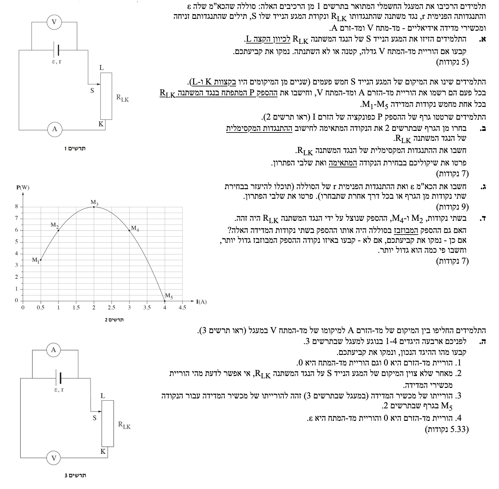
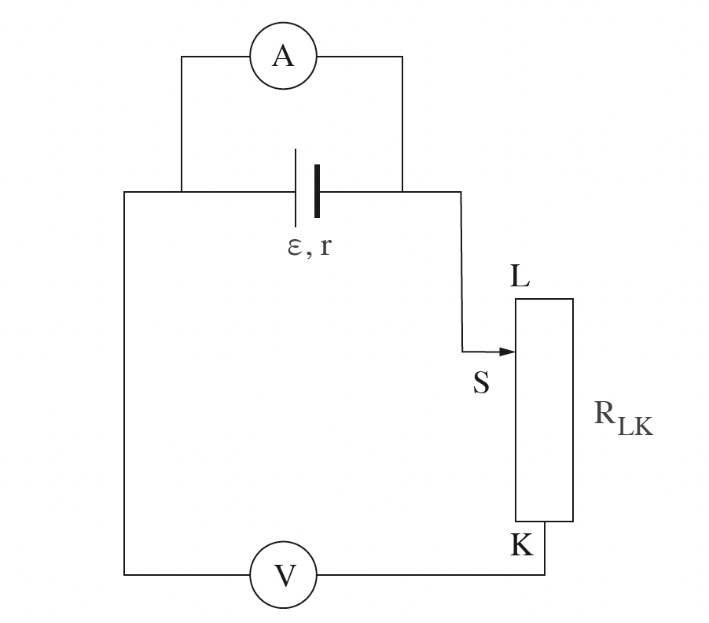

פתרון בגרות בפיזיקה - חשמל 2024
שאלה 4 - מעגל זרם ישר וגרף הספק
עודכן:
--- --:--:--
מבט כללי על השאלה
שאלה זו עוסקת במעגל חשמלי הכולל מקור מתח בעל התנגדות פנימית ונגד משתנה. נחקור את תלות ההספק בזרם וננתח מצבים שונים של המעגל, כולל קצר חשמלי.

[תמונת השאלה המקורית]
לא נמצאה תמונה בשם question-image.png באותה תיקייה.
מה נתון: התלמידים מזיזים את המגע הנייד \( S \) של הנגד המשתנה \( R_{LK} \) לכיוון הקצה \( L \). מקור המתח הוא בעל כא"מ \( \varepsilon \) והתנגדות פנימית \( r \) שהם קבועים.
מה מחפשים: יש לקבוע האם הוריית מד המתח \( V \) גדלה, קטנה או לא השתנתה בעקבות הזזת המגע, ולנמק.
נוסחאות מהדף:
\( I = \frac{\Sigma\varepsilon}{\Sigma R} \)
\( V_{ab} = \varepsilon - rI \)
פתרון צעד-אחר-צעד:
הזזת המגע הנייד \( S \) לכיוון הקצה \( L \) מגדילה את אורכו הפעיל של הנגד המשתנה המחובר למעגל (כאשר המגע מגיע ל-L כל הנגד נכלל במעגל). לכן, ההתנגדות של הנגד המשתנה \( R_{LK} \) גדלה.
ההתנגדות השקולה של המעגל כולו היא \( R_{tot} = R_{LK} + r \). מכיוון ש-\( R_{LK} \) גדל, ההתנגדות השקולה של המעגל עולה.
על פי חוק אוהם למעגל סגור הזרם הראשי במעגל מוגדר כיחס בין הכא"מ להתנגדות הכוללת, ולכן הזרם \( I \) קטן.
מד המתח מחובר במקביל לסוללה, ולכן הוא מודד את מתח ההדקים שלה. מתח ההדקים נתון על ידי הנוסחה \( V = \varepsilon - Ir \). מכיוון שהזרם \( I \) קטן (והערכים של \( \varepsilon \) ו-\( r \) קבועים), המכפלה של מפל המתח הפנימי \( Ir \) קטנה. כתוצאה מכך, מתח ההדקים \( V \) חייב לגדול.
הוריית מד המתח תגדל.
טיפ מורה:
תלמידים רבים מתבלבלים וחושבים שמד המתח מודד תמיד את הכא"מ של הסוללה. חשוב לזכור שסוללה אמיתית (שאינה אידיאלית) מאבדת חלק מהמתח שלה על ההתנגדות הפנימית שלה. מדובר למעשה בבזבוז בלתי נמנע של מתח בתוך הסוללה עצמה. ככל שהזרם קטן יותר, הבזבוז הזה (\( Ir \)) קטן יותר, ולכן המתח נטו שיוצא החוצה למעגל (\( V \)) גדול יותר!
מה נתון: נתון גרף 2 המציג את ההספק \( P \) של הנגד המשתנה כפונקציה של הזרם \( I \). על הגרף מופיעות 5 נקודות מדידה: \( M_1 \) עד \( M_5 \).
מה מחפשים: לזהות את הנקודה בגרף המתאימה להתנגדות המקסימלית של הנגד המשתנה \( R_{LK} \), ולחשב את ערכה של התנגדות זו.
נוסחאות בשימוש:
\( I = \frac{\varepsilon}{R_{LK} + r} \)
\( P = I^2 R \)
חישוב צעד-אחר-צעד:
מתוך חוק אוהם למעגל סגור, הזרם נמצא ביחס הפוך להתנגדות הכוללת. כאשר התנגדות הנגד המשתנה \( R_{LK} \) היא מקסימלית, הזרם הזורם במעגל \( I \) חייב להיות מינימלי.
אם נסתכל בגרף הנתון, נחפש את הנקודה בעלת ערך הזרם (\( I \)) הנמוך ביותר (הערך המינימלי בציר האופקי). נקודה זו היא הנקודה \( M_1 \).
מתוך הגרף, נוציא את הנתונים עבור הנקודה \( M_1 \): הזרם הוא \( I = 0.500 \text{ A} \) וההספק הוא \( P = 3.50 \text{ W} \). נציב ערכים אלו בנוסחת ההספק כדי לחלץ את ההתנגדות:
\[ P = I^2 \cdot R_{LK} \implies R_{LK} = \frac{P}{I^2} \]
\[ R_{LK} = \frac{3.50}{(0.500)^2} = \frac{3.50}{0.250} = 14.0 \ \Omega \]
הנקודה המתאימה היא \( M_1 \), וההתנגדות המקסימלית היא \( 14.0 \ \Omega \).
טיפ מורה:
בגרפים כאלה קל להתבלבל ולחשוב שנקודת המקסימום בגרף (\( M_3 \)) היא התשובה כי המילה "מקסימלי" מופיעה בשאלה. צריך לקרוא בזהירות: השאלה שואלת על התנגדות מקסימלית, לא על הספק מקסימלי. תמיד קשרו את הנעלם המבוקש לצירים הנתונים.
מה נתון: נתוני נקודות מהגרף שישמשו לחישוב: נקודה \( M_3 \) (הזרם \( I_3 = 2.00 \text{ A} \), ההספק \( P_3 = 8.00 \text{ W} \)) ונקודה \( M_5 \) (הזרם \( I_5 = 4.00 \text{ A} \), ההספק \( P_5 = 0.00 \text{ W} \)).
מה מחפשים: לחשב את הכא"מ \( \varepsilon \) של הסוללה ואת התנגדותה הפנימית \( r \).
נוסחאות בשימוש:
\( V_{ab} = \varepsilon - Ir \)
\( P = V_{ab} \cdot I \)
חישוב משוואות:
הנוסחה להספק כתלות בכא"מ אינה מופיעה בדף הנוסחאות, לכן נפתח אותה תחילה מתוך הנוסחאות הבסיסיות. נציב את ביטוי מתח ההדקים בתוך נוסחת ההספק המנוצל:
\[ P = V_{ab} \cdot I = (\varepsilon - Ir) \cdot I = \varepsilon I - I^2 r \]
כעת, נשתמש בשתי נקודות מהגרף כדי לבנות שתי משוואות בשני נעלמים (\( \varepsilon, r \)). נבחר את הנקודות \( M_5 \) ו-\( M_3 \) שנוחות לחישוב.
הצבה עבור נקודה \( M_5 \) (\( I = 4 \text{ A}, P = 0 \text{ W} \)):
\[ 0 = \varepsilon(4) - r(4)^2 \]
\[ 4\varepsilon = 16r \implies \varepsilon = 4r \]
הצבה עבור נקודה \( M_3 \) (\( I = 2 \text{ A}, P = 8 \text{ W} \)):
\[ 8 = \varepsilon(2) - r(2)^2 \]
\[ 8 = 2\varepsilon - 4r \]
נציב את הביטוי שקיבלנו עבור \( \varepsilon \) מהמשוואה הראשונה לתוך המשוואה השנייה ונקבל את התנגדות הפנימית והכא"מ:
\[ 8 = 2(4r) - 4r \]
\[ 8 = 8r - 4r \implies 8 = 4r \]
\[ r = 2.00 \ \Omega \]
\[ \varepsilon = 4(2.00) = 8.00 \text{ V} \]
התנגדות הפנימית היא \( r = 2.00 \ \Omega \) והכא"מ הוא \( \varepsilon = 8.00 \text{ V} \).
טיפ מורה: בחירת הנקודות לחישוב היא קריטית לזמן הפתרון במבחן. נקודה כמו \( M_5 \), שבה ערך הפונקציה מאופס, הופכת משוואה ריבועית למשוואה לינארית פשוטה וחוסכת המון אלגברה! בנוסף, נקודה זו מייצגת מצב של ״קצר חשמלי״ שבו \( V = 0 \) ולכן כל מתח הסוללה נופל על ההתנגדות הפנימית.
מה נתון: בשתי הנקודות \( M_2 \) ו-\( M_4 \), ההספק המנוצל על ידי הנגד המשתנה זהה: \( P_2 = P_4 = 6.00 \text{ W} \). זרמים מהגרף: \( I_2 = 1.00 \text{ A} \), \( I_4 = 3.00 \text{ A} \). התנגדות פנימית מצאנו כ- \( r = 2.00 \ \Omega \).
מה מחפשים: לקבוע האם ההספק המבוזבז בסוללה היה זהה בשתי הנקודות הללו. אם לא, לציין באיזו נקודה הוא היה גדול יותר ובפי כמה.
נוסחאות בשימוש:
\( P_r = I^2 r \)
חישוב הספק מבוזבז:
ההספק המבוזבז בתוך הסוללה תלוי בריבוע הזרם. נחשב אותו עבור כל אחת מהנקודות. עבור הנקודה \( M_2 \) (זרם של \( 1.00 \text{ A} \)):
\[ P_{r2} = (I_2)^2 \cdot r = (1.00)^2 \cdot 2.00 = 2.00 \text{ W} \]
עבור הנקודה \( M_4 \) (זרם של \( 3.00 \text{ A} \)):
\[ P_{r4} = (I_4)^2 \cdot r = (3.00)^2 \cdot 2.00 = 18.0 \text{ W} \]
ההספקים אינם זהים. ההספק בנקודה \( M_4 \) גדול משמעותית. נחשב את היחס ביניהם:
\[ \frac{P_{r4}}{P_{r2}} = \frac{18.0}{2.00} = 9.00 \]
ההספק המבוזבז אינו זהה. בנקודה \( M_4 \) ההספק המבוזבז היה גדול יותר פי 9 בהשוואה לנקודה \( M_2 \).
טיפ מורה: זהו לקח חשוב בהנדסת חשמל! בשני המצבים המכשיר החיצוני שלנו (הנגד המשתנה) מקבל את אותו הספק מועיל (6W), אך בזרם הגבוה יותר הסוללה מתחממת הרבה יותר ומבזבזת המון אנרגיה. כמובן שאי אפשר פשוט להקטין את הזרם לאפס כדי למנוע בזבוז, כי אז לא נקבל את ההספק המועיל שאנחנו צריכים! המטרה היא תמיד למצוא את האיזון הנכון: כאשר יש לנו שתי אפשרויות לקבל את אותו הספק מועיל, תמיד נבחר במצב שבו הזרם נמוך יותר, כדי למקסם את הנצילות ולהקטין את הפחת (בזבוז האנרגיה).
מה נתון: חברו מחדש את המעגל (תרשים 3) כך שמד הזרם (אידיאלי, התנגדות אפסית) מחובר במקביל לסוללה, ומד המתח (אידיאלי, התנגדות אינסופית) מחובר בטור.
מה מחפשים: לקבוע איזה מארבעת ההיגדים הנתונים בשאלה הוא הנכון ולנמק.
נוסחאות ועקרונות:
קצר חשמלי
\( V_{ab} = \varepsilon - Ir \)
ניתוח המעגל:
ננתח את המעגל. מד הזרם מוגדר כאידיאלי, כלומר התנגדותו הפנימית שווה לאפס (\( R_A = 0 \)). מאחר והוא מחובר במקביל לסוללה, הוא יוצר מסלול עוקף בעל אפס התנגדות ("קצר מלא").

[תרשים סעיף ה']
לא נמצאה תמונה בשם image-5.png באותה תיקייה.
כל הזרם שיוצא מהסוללה יזרום דרך הענף העליון של מד הזרם, ואף זרם לא יגיע לענף התחתון. במצב זה זורם דרך מד הזרם זרם קצר המחושב כך:
\[ I = \frac{\varepsilon}{r} = \frac{8.00}{2.00} = 4.00 \text{ A} \]
זהו בדיוק הערך שמד הזרם יורה. מד המתח מחובר לאורך הענף המקביל לסוללה. מאחר שהסוללה מקוצרת, מתח ההדקים עליה מחושב כך:
\[ V_{ab} = \varepsilon - I \cdot r = 8.00 - (4.00)(2.00) = 0.00 \text{ V} \]
ולכן מד המתח יורה \( 0 \text{ V} \).
כעת, נבדוק את נקודה \( M_5 \) בגרף: בנקודה זו הזרם היה \( I = 4.00 \text{ A} \) וההספק על הנגד המשתנה היה \( P = 0.00 \text{ W} \). מכיוון ש-\( P=VI \), אם ההספק הוא 0 והזרם הוא 4, משמע המתח בנקודה זו היה 0. המדידות בנקודה \( M_5 \) מתאימות במדויק למדידות של המעגל הנוכחי.
היגד מספר 3 הוא הנכון: "ההוריות של מכשירי המדידה זהות להוריות של מכשירי המדידה עבור הנקודה M5 בגרף".
טיפ מורה:
הנה לקח חשוב על מכשירי מדידה: מכשיר מדידה מוגדר כ"אידיאלי" אם הוא אינו משפיע על הזרמים והמתחים במעגל – אך זה נכון רק כל עוד מחברים אותו נכון! ברגע שחיברנו אותו בצורה שגויה (כמו מד הזרם במקביל בסעיף זה), הוא מיד הופך לגורם שמשפיע דרמטית על המעגל ומשנה אותו (יוצר קצר). בנוסף, חשוב להבהיר שמושג כמו "מכשיר לא אידיאלי" לא מעיד על שגיאה במדידה. "לא אידיאלי" משמעו שנוכחות המכשיר משפיעה על המעגל המקורי, אך המכשיר ימשיך למדוד בצורה מדויקת לחלוטין את הזרם או המתח של המציאות החדשה שנוצרה בעקבותיו!